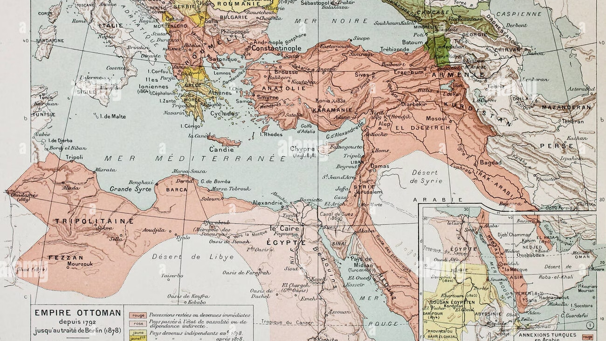
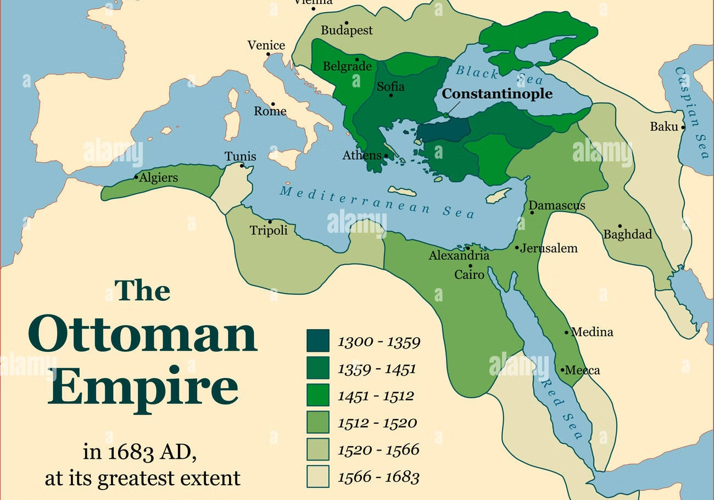

للاستزادة: شرح المرشد السياحي بالإنجليزية
🎙️
TOUR GUIDE SPOKEN SCRIPT
Narrating Napoleon's Invasion: The Battle of the Pyramids & Abukir Bay
▼
Narrating Napoleon's Invasion: The Battle of the Pyramids & Abukir Bay
"Good morning ladies and gentlemen, welcome to one of the most transformative crossroads in modern Egyptian history: the French Expedition led by Napoleon Bonaparte between 1798 and 1801."
"Why did Napoleon set his sights on Egypt? In 1798, Revolutionary France was locked in fierce rivalry with Great Britain. Unable to cross the English Channel due to the overwhelming power of the Royal Navy, Napoleon and Foreign Minister Talleyrand designed a daring indirect strategy: seize Egypt, secure the shortest maritime route to the East, and sever Britain’s lifeline to its crown jewel—India. Furthermore, Napoleon brought over 160 scholars, scientists, and engineers to explore Egypt’s ancient monuments and compile the monumental encyclopaedia Description de l'Égypte."
"When the French armada landed at Alexandria on July 2nd, 1798, they were fiercely opposed by the patriotic governor, Mohamed Korayem, who defended the city until captured and later executed by firing squad. Napoleon famously distributed an Arabic proclamation claiming he had arrived to liberate the Egyptians from Mamluk tyranny and professing profound respect for Islam."
"On July 21st, 1798, right here on the plains of Embaba facing the Giza Plateau, the iconic Battle of the Pyramids unfolded. Napoleon formed invincible infantry squares, uttering his legendary words: 'Soldiers, from the summit of these pyramids, forty centuries look down upon you!' The dazzling charges of the Mamluk cavalry under Murad Bey were shattered by disciplined French firepower."
"However, Napoleon’s triumph was short-lived. Just ten days later, on August 1st, 1798, British Admiral Horatio Nelson caught the French fleet anchored in Abukir Bay. In a ferocious nocturnal engagement, the French flagship L'Orient exploded, and the entire French fleet was annihilated. Bonaparte was permanently trapped inside Egypt, while in Upper Egypt, Murad Bey allied with the local populace, sustaining ten months of relentless guerilla warfare."
📖
قاموس ومصطلحات المحاضرة للمرشد (اضغط هنا لفتح / طي القاموس)
TOUR GUIDE BILINGUAL GLOSSARY
▼
قاموس ومصطلحات المحاضرة للمرشد (اضغط هنا لفتح / طي القاموس)
TOUR GUIDE BILINGUAL GLOSSARY💡 تنبيه للمرشد السياحي: هذه المصطلحات والكلمات مستخرجة من المنهج الأكاديمي المعتمد، ومزودة بالنطق الصوتي والمعنى السياقي للمرشد:
الحملة الفرنسية
الحملة الفرنسية
The French Expedition
/ðə frɛntʃ ˌɛkspəˈdɪʃən/
▼
الحملة الفرنسية
المعنى السياقي للمرشد: الاسم التاريخي للحملة العسكرية والعلمية بقيادة نابليون بونابرت على مصر (1798–1801م)، والتي هدفت لقطع طريق بريطانيا للهند وتأسيس إمبراطورية فرنسية شرقية.
المسألة الشرقية
المسألة الشرقية
The Eastern Question
/ðə ˈiːstərn ˈkwɛstʃən/
▼
المسألة الشرقية
المعنى السياقي للمرشد: الصراع والتنافس الدبلوماسي والعسكري بين القوى الأوروبية الكبرى (روسيا، بريطانيا، النمسا، وفرنسا) حول تقسيم ممتلكات "رجل أوروبا المريض" (الدولة العثمانية).
ازدواجية السلطة المملوكية
ازدواجية السلطة المملوكية
Mamluk Diarchy
/ˈmæmluːk daɪˈɑːrki/
▼
ازدواجية السلطة المملوكية
المعنى السياقي للمرشد: الحكم المشترك لثنائي أمراء المماليك مراد بك (القائد العسكري) وإبراهيم بك (المسؤول الإداري وشيخ البلد)، اللذين انفردا بالحكم الفعلي وتهميش الباشا العثماني.
كوتشوك كينارجا (1774)
كوتشوك كينارجا (1774)
Treaty of Küçük Kaynarca
/ˈtriːti ɒv ˌkuːtʃʊk kaɪˈnɑːrdʒə/
▼
كوتشوك كينارجا (1774)
المعنى السياقي للمرشد: المعاهدة المذلة التي وقعتها الدولة العثمانية مع روسيا بعد هزيمتها، والتي منحت القياصرة الروس حق حماية الأرثوذكس والتدخل في الشؤون الداخلية العثمانية.
جيش الشرق
جيش الشرق
Armée d'Orient
/ɑːrˈmeɪ dɔːriˈɒnt/
▼
جيش الشرق
المعنى السياقي للمرشد: التسمية العسكرية الرسمية التي أطلقتها حكومة الإدارة الفرنسية في 12 أبريل 1798م على القوة السرية المتوجهة لاحتلال مصر بقيادة بونابرت.
محمد كريم
محمد كريم
Mohamed Korayem
/moʊˈhæməd koʊˈreɪ.ɪm/
▼
محمد كريم
المعنى السياقي للمرشد: حاكم الإسكندرية الوطني البطل، الذي رفض تسليم الثغر لبونابرت وقاوم بأسلحته البدائية حتى اعتقل وأعدم رمياً بالرصاص في ميدان الرميلة بالقاهرة (6 سبتمبر 1798م).
معركة شبراخيت (13 يوليو)
معركة شبراخيت (13 يوليو)
Battle of Shubra Khit
/ˈbætəl ɒv ʃuːbrə xiːt/
▼
معركة شبراخيت (13 يوليو)
المعنى السياقي للمرشد: أول صدام عسكري بري ونهري في محافظة البحيرة بين فرسان المماليك بقيادة مراد بك والجيش الفرنسي، كشفت الفارق الهائل بين سلاح الفرسان التقليدي والمدفعية الحديثة.
معركة الأهرام / إمبابة (21 يوليو)
معركة الأهرام / إمبابة (21 يوليو)
Battle of the Pyramids
/ˈbætəl ɒv ðə ˈpɪrəmɪdz/
▼
معركة الأهرام / إمبابة (21 يوليو)
المعنى السياقي للمرشد: المعركة الحاسمة التي دارت غرب النيل بإمبابة، حيث حطم نابليون بمربعات مشاته قلب الجيش المملوكي، فهرب مراد للصعيد وإبراهيم للشام، وفُتحت أبواب القاهرة للحملة.
معركة أبي قير البحرية (أغسطس)
معركة أبي قير البحرية (أغسطس)
Battle of the Nile (Abukir)
/ˈbætəl ɒv ðə naɪl (ˌæbuːˈkɪər)/
▼
معركة أبي قير البحرية (أغسطس)
المعنى السياقي للمرشد: الموقعة البحرية الشهيرة التي باغتها الأسطول البريطاني بقيادة نيلسون، محطماً سفن الأسطول الفرنسي بقيادة برويه، مما فرض حصاراً شاملاً على الحملة وقطع صلتها بباريس.
الأدميرال نيلسون
الأدميرال نيلسون
Horatio Nelson
/həˈreɪʃioʊ ˈnɛlsən/
▼
الأدميرال نيلسون
المعنى السياقي للمرشد: أبرز قادة البحرية البريطانية، تعقب الأسطول الفرنسي في البحر المتوسط حتى دمّره تماماً في خليج أبي قير، وقضى على حلم فرنسا في السيادة على البحر المتوسط.
حرب المناوشات والاستنزاف
حرب المناوشات والاستنزاف
Guerilla / Attrition Warfare
/ɡəˈrɪlə / əˈtrɪʃən ˈwɔːrfɛər/
▼
حرب المناوشات والاستنزاف
المعنى السياقي للمرشد: التكتيك العسكري الشعبي الذي اعتمده أهالي الصعيد ضد جنود الجنرال ديزيه؛ تجنب المعارك النظامية المفتوحة وشن هجمات مباغتة استغلت طول الوادي لإنهاك الفرنسيين.
ميناء القصير
ميناء القصير
Port of Al-Qusayr
/pɔːrt ɒv æl-kuːˈseɪər/
▼
ميناء القصير
المعنى السياقي للمرشد: الميناء الاستراتيجي على ساحل البحر الأحمر، الذي تدفقت عبره قوافل المتطوعين من قبائل الجزيرة العربية عبر البحر لمساندة أهالي الصعيد ضد الغزو الفرنسي.
أولاً: أوضاع مصر والدولة العثمانية قبيل مجيء الحملة
الزوايا الثلاث للانهيار السياسي والعسكري: شيخوخة العثمانيين، ازدواجية السلطة، والانكسار الداخلي
توضح الدراسات التاريخية الأكاديمية في مقدمة هذه المحاضرة أن الحملة الفرنسية لم تنزل في مصر بمحض الصدفة، بل جاءت تتويجاً لحالة من الهشاشة العميقة والانكسار الداخلي. ويمكن رصد وتحليل أوضاع مصر والدولة العثمانية قبيل مجيء الحملة من خلال ثلاث زوايا رئيسية:
الزاوية الأولى: ضعف الدولة العثمانية وشيخوختها المركزية:
ضعف الدولة العثمانية وشيخوختها المركزية
شهد النصف الثاني من القرن الثامن عشر حالة من الترهل والشيخوخة في مفاصل الدولة العثمانية؛ حيث تحولت سيادتها على الولايات (ومنها مصر) إلى سيادة اسمية صورية نتيجة عاملين حاسمين:
الزاوية الثانية: ازدواجية السلطة وثنائي المماليك (مراد وإبراهيم):
ازدواجية السلطة في مصر (الباشا المحبوس وثنائي المماليك)
اتسم الوضع السياسي بهشاشة بالغة؛ فبينما كان الوالي العثماني يمثل الشرعية الصورية للأستانة من فوق قلعة الجبل، كان في الحقيقة «باشا بلا مخالب»، مجرداً من أي نفوذ حقيقي ومنشغلاً بمحاولة الحفاظ على حياته وبقائه. أما السلطة الفعلية ومقاليد الأمور والسيطرة على الأرض والجباية فكانت في يد ثنائي المماليك: مراد بك (القائد العسكري للأوجاقات) وإبراهيم بك (شيخ البلد)، اللذين انفردا بالحكم الفعلي وتجاهلا توجيهات الأستانة.
الزاوية الثالثة: الانكسار الداخلي والفراغ السيادي في مصر:
الانكسار الداخلي والفراغ السيادي
أدى الصراع الطاحن بين قطبي المماليك وفصائلهم إلى استنزاف موارد البلاد، وإهمال صيانة الثغور والموانئ (خاصة ثغر الإسكندرية وقلاعه)، وانصراف المماليك لتكديس الثروات وفرض الإتاوات. هذا «الفراغ السيادي» والضعف العسكري جعلا الجبهة الداخلية مفككة تماماً وعاجزة عن التصدي لآلة حربية أوروبية حديثة.

ثنائي المماليك: مراد بك وإبراهيم بك
انفرد الاثنان بحكم مصر أواخر القرن الثامن عشر بعد صراعات دموية، واقتسما الجباية والإدارة؛ كان مراد بك فارساً عسكرياً مغواراً لكنه أهمل التسليح الحديث، بينما أدار إبراهيم بك الشؤون الإدارية كشيخ بلد.

أوروبا والدولة العثمانية أواخر القرن 18
المسألة الشرقية والحروب الروسية العثمانية المتتالية أنهكت خزينة إسطنبول وشتتت جيوشها الإنكشارية، مما حوّل سيطرة السلطان على مصر إلى اسم مجرد يُذكر في خطبة الجمعة وعلى السكة.
ثانياً: أسباب الحملة الفرنسية على مصر (الأهداف الستة)
الدوافع الاستراتيجية، الاقتصادية، البحرية، العلمية، والشخصية التي حركت حكومة الإدارة وبونابرت
ضرب المصالح البريطانية في الشرق
رغبة فرنسا في مهاجمة عدوتها التقليدية (بريطانيا) وقطع قنوات الاتصال بينها وبين مستعمراتها الغنية في الهند. ولما عجزت فرنسا عن غزو الجزر البريطانية في عقر دارها لقوة الأسطول الملكي، كان البديل الاستراتيجي ضرب بريطانيا في مستعمراتها عبر السيطرة على أقصر طريق تجاري يربط الشرق بالغرب.
تحويل المتوسط إلى «بحيرة فرنسية»
السعي لفرض السيادة البحرية الكاملة للجمهورية الفرنسية على حوض البحر المتوسط. فبعد أن سيطر نابليون على إيطاليا وجزر البحر الأيوني واليونان، كان ضم مصر يغلق الدائرة الاستراتيجية ويجعل البحر المتوسط بحيرة فرنسية خالصة تحرم الأساطيل المعادية من موانئه.
تعويض الميراث الاستعماري الضائع
تكوين مستعمرة فرنسية كبرى في مصر تعوض ما خسرته فرنسا من مستعمرات في كندا والهند خلال القرن الثامن عشر، وفتح ميادين وأسواق جديدة لتصريف المصنوعات الفرنسية نحو سوريا وسواحل شرق أفريقيا والجزيرة العربية، وهو ما دل عليه استصحاب العلماء والمطابع والآلات الحرفية.
كشف مصر علمياً وأثرياً وتوثيقها
التعرف الشامل على ثروات مصر الطبيعية والتاريخية والأثرية؛ ولذلك رافق الجيش أكثر من 100 عالم ومهندس وأثري وفنان في مختلف التخصصات الجغرافية والزراعية والآثارية للقيام بأعمال الحفر والتنقيب والرسم، وهو المشروع الذي أثمر لاحقاً موسوعة «وصف مصر».
طموح نابليون بونابرت الشخصي
عقب انتصاراته الكاسحة في إيطاليا، راود بونابرت حلم إقامة إمبراطورية في الشرق على غرار أبطاله التاريخيين: يوليوس قيصر والإسكندر الأكبر. وجد نابليون في أرض الفراعنة سحراً تاريخياً وموطناً للفتوحات الكبرى، وعبر النيل رأى نفسه زعيماً عالمياً يغير مجرى التاريخ الإنساني.
حماية الرعايا وتأديب المماليك «العصاة»
اتخاذ سوء معاملة المماليك (مراد بك وإبراهيم بك) للتجار والرعايا الفرنسيين مبرراً وذريعة قانونية لغزو مصر. وادعت الدعاية الفرنسية أن هدف الحملة إنصاف المظلومين، وتأديب المماليك باعتبارهم «عصاة متمردين على سيادة السلطان العثماني الشرعي»، وتخليص الشعب المصري من وطأة مظالمهم.
ثالثاً: الحملة الفرنسية من الفكرة إلى التنفيذ الميداني
تطور الطموح الفرنسي لاحتلال مصر عبر القرون: من لويس التاسع إلى مذكرات القنصل مجالون والتحرك السري
أ- تطور فكرة الحملة عبر العصور
ب- مراحل التنفيذ والتحرك السري
رابعاً: العمليات العسكرية للحملة والزحف نحو القاهرة
إنزال العجمي، فدائية محمد كريم، تحليل منشور نابليون الشهير، ومعركتا شبراخيت وإمبابة
١- الإنزال في الإسكندرية ومقاومة محمد كريم الباسلة (٢ يوليو ١٧٩٨م)
نزلت القوات الفرنسية عند شاطئ العجمي غرب الإسكندرية فجر يوم ٢ يوليو ١٧٩٨م، وفوجئت المدينة بالأسطول الفرنسي بعد أيام قليلة من رحيل الأسطول الإنجليزي بقيادة نيلسون الذي كان يحذرهم من الغزو. رفض حاكم الثغر الوطني السيد محمد كريم تصديق التحذير في البداية ظناً منه أنها مناورة إنجليزية. وعند نزول الفرنسيين، قاد محمد كريم الأهالي والمجاهدين ودافع عن أسوار المدينة المتهالكة ببسالة نادرة حتى نفدت ذخيرة المدافع واقتحمت القوات الفرنسية المدينة.
معركة شبراخيت
13 JULY 1798واصلت القوات الفرنسية زحفها عبر صحراء دمنهور القاحلة في طريقها للعاصمة، حيث عانى الجنود من العطش وحرارة الصيف الشديدة.
التقت القوات الفرنسية بقوات المماليك بقيادة مراد بك في محافظة البحيرة عند شبراخيت، ودارت مواجهة مزدوجة برية ونهرية بين الأسطولين في النيل.
معركة إمبابة (الأهرام)
21 JULY 1798الموقعة الفاصلة التي خاضها نابليون غرب النيل في مواجهة معسكر مراد بك المرابط بإمبابة، حيث وقف نابليون أمام جنوده يخطب قائلاً: «أيها الجنود، إن أربعين قرناً من الزمان تنظر إليكم من فوق قمم هذه الأهرام!».
شكل الفرنسيون مربعات مشاة حصينة محاطة بالحراب والمدافع صدمت هجمات فرسان المماليك الشجاعة لكن البدائية.
سادساً: الحملة الفرنسية ومحاولات إخضاع الصعيد (المقاومة الأسطورية)
عرض نابليون السياسي لمراد بك، حرب المناوشات لـ 10 أشهر، دعم قبائل القصير، وجغرافيا الوادي المنهكة
الأهمية الاستراتيجية: لماذا اعتزم نابليون إنهاء مقاومة الصعيد فوراً؟
توضح المصادر التاريخية المعتمدة أن خطورة بقاء الصعيد خارج السيطرة تمثلت في عرقلة الملاحة النهرية في نهر النيل؛ حيث نجح مراد بك بالفعل في إيقاف سفن القمح والمؤن ومنع وصول إمدادات الغلال الحيوية من الصعيد إلى سكان القاهرة والجيش الفرنسي.
في البداية، فضل نابليون حلاً سياسياً ديبلوماسياً: عرض على مراد بك أن يترك له حكم الصعيد بالكامل من مديرية جرجا وحتى الشلالات في أسوان، على أن يكون ذلك تحت الإشراف الفرنسي مع دفع الضرائب والخراج السنوي لحكومة القاهرة. إلا أن مراد بك شعر بقوته الشعبية وبأن الجيش الفرنسي محاصر بحرياً، فرفض عرض التسليم تماماً.
الحملة العسكرية بقيادة الجنرال «ديزيه» وحرب المناوشات:
وجه نابليون خيرة قواته بقيادة الجنرال «ديزيه» (Desaix) لإخضاع الصعيد عسكرياً. ورغم نجاح القوات الفرنسية في هزيمة مراد بك في بعض المعارك وتشتيت جيشه النظامي، إلا أنها أخفقت تماماً في إخضاع الأهالي والشعب.
استمرت مقاومة الصعيد قرابة عشرة أشهر كاملة (من أغسطس ١٧٩٨م وحتى مايو ١٧٩٩م)، وهي مدة تفوق بمراحل مقاومة الوجه البحري التي لم تصمد لأكثر من شهر ونصف!
١. تلاحم القوى وتدفق متطوعي الجزيرة العربية:
تحالفت القوى الشعبية لأهالي قرى ومدن الصعيد مع فلول جيش المماليك. وكان العامل الحاسم هو انضمام قبائل عربية متطوعة عبرت البحر الأحمر قادمة من الحجاز وشبه الجزيرة العربية عبر ميناء «القصير» لمؤازرة إخوانهم بالمال والسلاح والفرسان في أروع صور التضامن العربي والإسلامي ضد المحتل.
٢. جغرافية الصعيد وبعده الشاسع عن القاهرة:
لعب طول الوادي وامتداده الجغرافي جنوباً دوراً حاسماً في إرهاق القوات الفرنسية وتشتيت خطوط إمدادها. واعتمد الأهالي استراتيجية «حرب العصابات والمناوشات» وتجنب المعارك النظامية المفتوحة. وبذلك ظل الوجود الفرنسي قلقاً ومحصوراً في ثكناته العسكرية من الجيزة حتى أسوان دون أي سيطرة حقيقية على البلاد.
افتح تدريبات وأسئلة الدرس
ثامناً: اختبر معلوماتك الأكاديمية (7 أسئلة وفق المعايير الأكاديمية)
أسئلة اختيار من متعدد تفاعلية مع تصحيح فوري وشرح تعليلي لكل إجابة